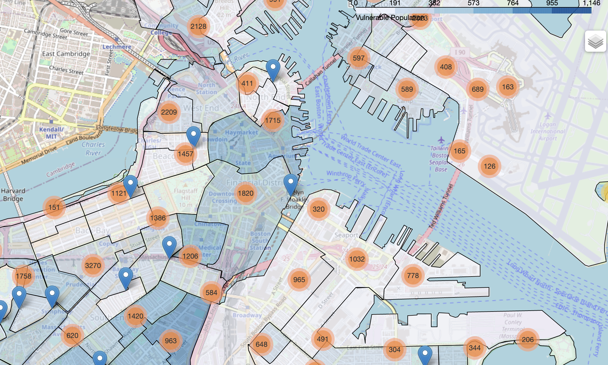
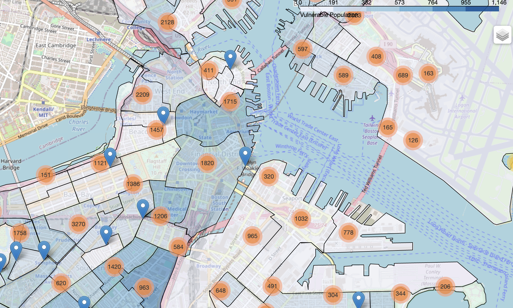

Street trees are the unsung heroes of suburban and urban America because of their ability to mitigate the effects of Climate Change. A study done in Louisville by the Institute for Healthy Air, Water, and Soil found that trees provide $330 billion in benefits to the city, as tree canopies appeared to block damaging pollutants by 60 percent.
Not only are trees better for air quality and reducing heat, but they also have psychological and social impacts. Their beauty can improve both the mental health of people living around them and increase housing values. Interestingly, studies have also shown that areas with more street trees have lower rates of crime and motor vehicle accidents.
Sociologists have proposed the following reasonings:
- Trees are handled on the local, not federal level, so when poorer areas need to cut funding, trees tend to be what get cut first, especially since they’re so expensive to maintain.
- Some cities were simply not designed to be tree-friendly and these tend to be areas that have less resources in general.
This is a big problem. Poorer neighborhoods have higher populations of those more susceptible to climate change effects and would have less access to care. We can use data to see where there are the greatest disparities of trees and vulnerable people to know where to allocate resources. I tried to do this myself, using public datasets from Boston’s open-data website. One dataset includes geospatial data of the neighborhoods in Boston as well as numerical data on the population of people most vulnerable to the effects of Climate Change. These include children, elderly, chronically ill, immigrants, and low-income, etc. The other dataset includes the coordinates for all park trees and street trees in Boston. I specifically examined the street trees. For mapping, I used folium, as well as other Python data science tools like Pandas dataframes, numpy arrays, and json files. I created a choropleth map that color codes neighborhoods by their populations of vulnerable individuals. I used marker clusters to show clusters of street trees in Boston.
 

I also included some files to work more quantitatively with the data. First, I processed the trees csv file and used Shapely, another Python library, to see how many trees were in each neighborhood. I did the same with the vulnerable population data, which resulted in a csv file with three data points: neighborhood, number of trees, and number of vulnerable individuals. Let’s say we divide vulnerable individuals by the number of trees for a given neighborhood. The greater that value compared to other neighborhoods’ values, the more at-risk the neighborhood is because they comparatively have less trees per vulnerable person.
Data showed these neighborhoods to have the highest disparities:
- Allston
- Leather District
- South End
- Bay Village
- Mission Hill
Whether or not street trees actually do mitigate the effects of climate change, they can reveal disparities that are worth addressing. Planting more trees in resource-scarce areas is perhaps akin to paying more attention to these areas and building them up. I think this project shows how important data and tech are when it comes to social problems.